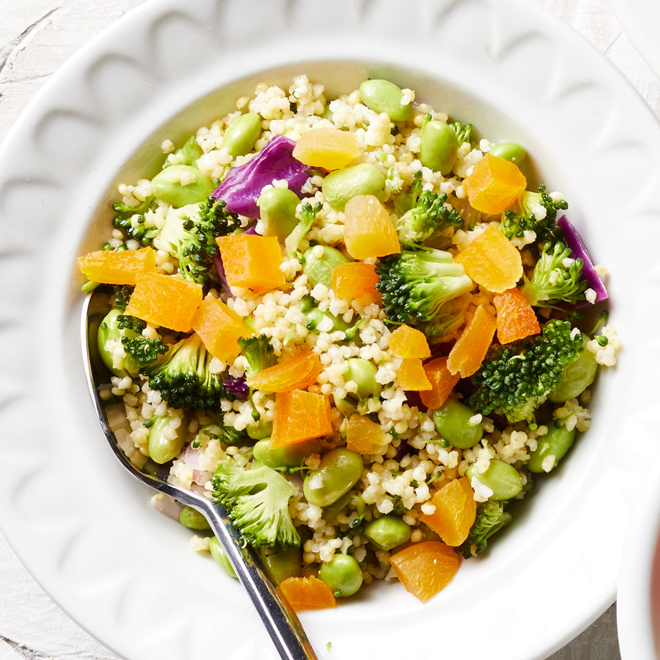

Veg
Vegetarian Food Vegetarian food is a diverse and flavorful cuisine that offers a wide range of dishes, from aromatic curries to spicy and tangy dishes. It is not only rich in nutrients but also provides numerous health benefits. Here are some highlights of vegetarian food: Paneer Butter Masala: A North Indian dish flavored with spices like garam masala, cumin, and coriander, best enjoyed with naan, roti, or rice. Dal Makhani: A North Indian staple at weddings and special occasions, served with rice or Indian bread. Indian vegetarian cuisine is a testament to the country's culinary creativity and cultural diversity. It is a celebration of the use of fresh vegetables, legumes, and dairy products, offering a variety of dishes that cater to different tastes and preferences. Whether you're looking for comfort food, festive dishes, or quick weeknight dinners, Indian vegetarian food is sure to satisfy your cravings and provide a wholesome meal.
NonVeg
Non-vegetarian food (in Indian English sometimes shortened to non-veg food) contains meat (red meat, poultry, seafood, or the flesh of any other animal), and sometimes, eggs. The term is common in India, but not usual elsewhere. In the generally vegetarian environment of India, restaurants offering meat and fish usually have a "non-vegetarian" section of their menu, and may include the term (typically as "Veg and Non-veg") in their name-boards and advertising. When describing people, non-vegetarians eat meat and/or eggs, as opposed to vegetarians. But in India, consumption of dairy foods is usual for both groups. Non-vegetarian is the majority human diet in the world (including India). Non-vegetarians are also called omnivores in nutritional science.